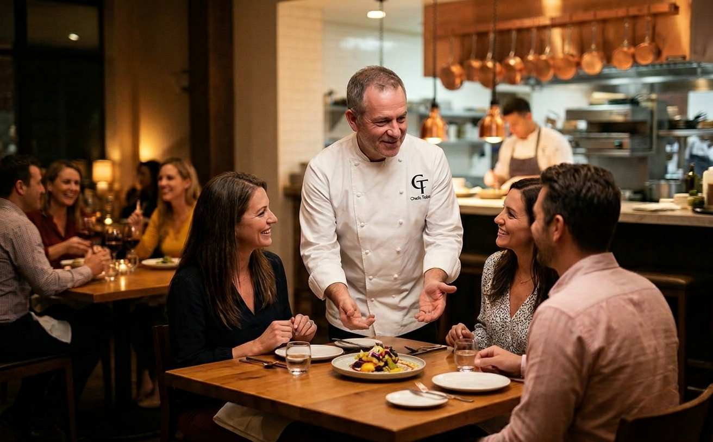
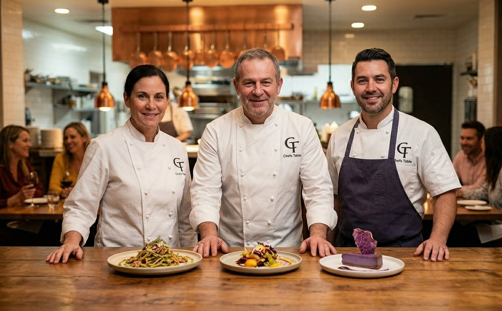

Our Story
Welcome to Chefs Table, where a passion for exceptional dining meets the vibrant flavors of modern cuisine. Founded on the belief that great food brings people together, our journey began with a simple vision: to craft a dining experience that celebrates both culinary creativity and the comforting warmth of home. From our kitchen to your table, every dish tells a story of dedication, quality, and a relentless pursuit of flavor.

Our Philosophy & Values
At the heart of Chefs Table is a deep respect for ingredients and craftsmanship. We take pride in sourcing the freshest local produce—from vibrant tropical fruits to crisp herbs—allowing the natural qualities of each ingredient to shine. We believe that true hospitality means creating an inviting space where every guest feels like family, whether you're joining us for a casual lunch, a celebratory dinner, or a quiet evening out.

- Quality First: We handpick our ingredients daily to ensure peak freshness and bold, authentic tastes in every bite.
- Artisanal Craft: Every plate and beverage is thoughtfully designed and prepared from scratch with precision and care.
- Community & Connection: We strive to cultivate a warm, welcoming environment that turns every meal into a memorable occasion.